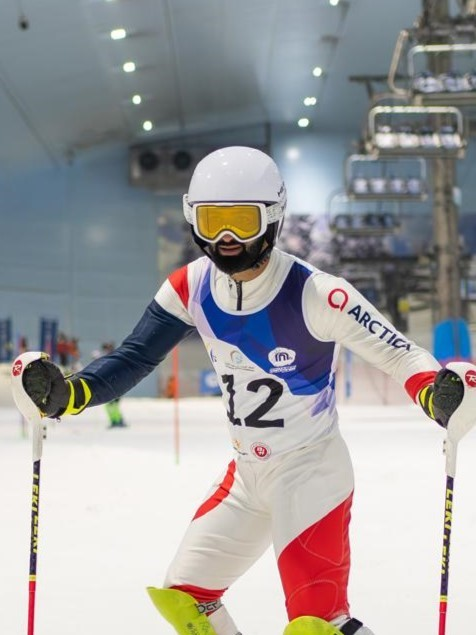
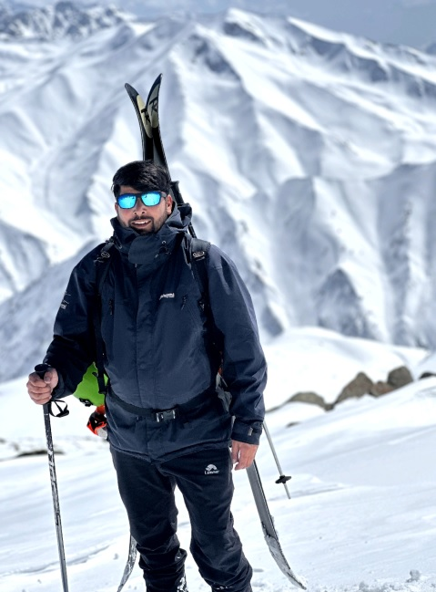
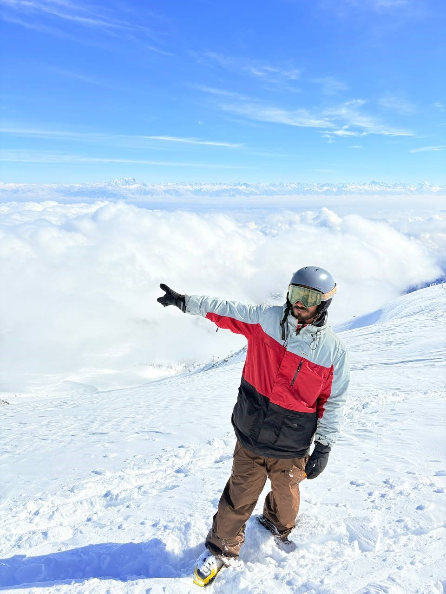
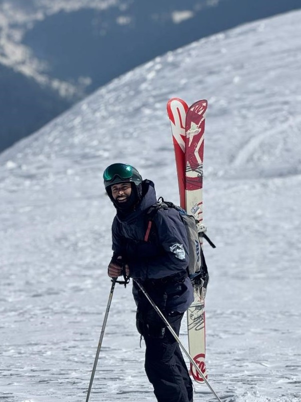
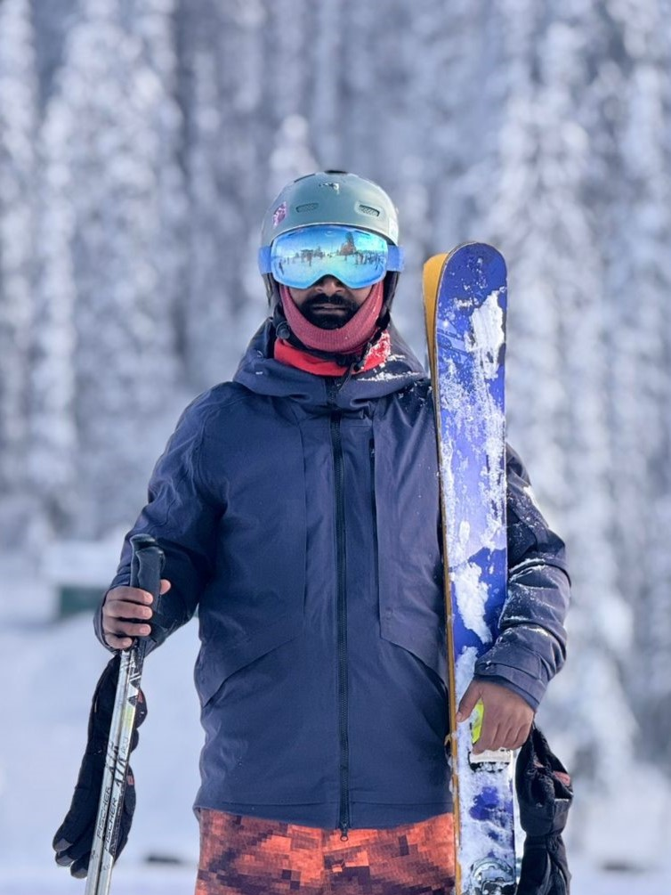

The People Behind Every Session

Popularly known as "The Tiger," Waseem Bhat from Mul Bangil, Tangmarg is among the most accomplished ski competitors to have come out of Gulmarg. He has worn the Indian jersey on four separate occasions, competing at national level and serving as a benchmark for what Kashmir's slopes can produce.
As a coach and instructor, Waseem channels the same discipline and competitive instinct into his teaching — whether he's working with a complete beginner finding their first turns or an advanced skier preparing for challenging off-piste terrain.
Every guide holds a J&K Himalayan Tourism Department licence and has spent their lifetime on Gulmarg's terrain.

A dual-certified instructor equally skilled on skis and a snowboard. Ishfaq has spent over a decade guiding guests across all zones and is particularly effective with younger riders and snowboard beginners.

A seasoned Gulmarg native with a deep personal connection to the mountains he grew up on. Maqsood brings warmth, patience and technical precision to every session he leads.

Raised on Gulmarg's slopes since early childhood, Naseer is relaxed on groomed runs and equally confident in off-piste terrain. Holds dual avalanche safety certifications to international standards.

Over a decade of Himalayan experience combined with avalanche training to both US and New Zealand professional standards. One of the most safety-focused instructors on our team.

A certified ski instructor with extensive local knowledge of Gulmarg's terrain from beginner poma slopes to advanced off-piste. Known for his methodical teaching approach and genuine care for every student's progress.

Gulmarg's dedicated snowboard specialist — certified to teach all ability levels on the mountain's varied terrain from groomed runs to off-piste powder.
Every guide on our team holds an official licence from the Jammu & Kashmir Himalayan Tourism Department — the required professional credential for all mountain guiding activity in the region.
Several team members hold AIARE Level 1 avalanche certifications to US standards and have completed international training with New Zealand mountain guides. Off-piste sessions are never taken without avalanche-equipped personnel.
Every instructor grew up in Gulmarg or the villages immediately surrounding it. Their knowledge of this mountain is not academic — it's lived and inherited across generations.
No generic group approach. Each student is assessed at the start of their first session and matched to the appropriate programme, instructor and terrain for their ability level.
Safety, pacing and enjoyment are prioritised over checking off terrain or pushing students beyond their comfort zone. Confident, happy skiers are the only measure of a successful session.
Gulmarg is a protected biosphere reserve. Our team operates with full environmental awareness — no litter, no noise in sensitive zones and strict adherence to designated guiding areas.
Choose your instructor and activity below, or contact us and we'll match you with the right guide.